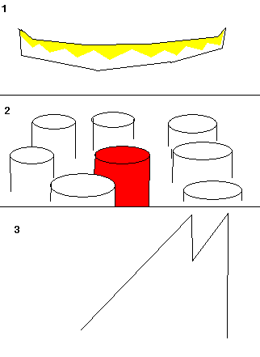

PsiPog.net
View topic - All good RVers, read
PsiPog.net Forum Index » Clairvoyance » All good RVers, read
| All good RVers, read | |||
| Author | Message | ||
|---|---|---|---|
| All good RVers, read on Sun Apr 09, 2006 12:45 am | |||
1337Zebra
Joined: 09 Apr 2006 |
I believe totally, in TK, telepathy, ect., however... I have always had my doubts on RVing and the such. I know that I probably offended some RVers out there, but I'm willing to accept RVing is real if you can show me a quick example.
I've hidden a can of Dr. Pepper somewhere in my house, and I want to see if someone can find it. 5593-0322 are coords |
||
| Back to top | |||
| Posted on Sun Apr 09, 2006 3:50 am | |||
Peebrain
Site Admin |
A better way to pose a challenge would be to say: "I have a challenge for you, the coords are BLAH." - That way, we won't get AOL.
I mean... we now know we're looking for a can, and we know it's in a house. This information can really get the imagination going. Hence why coordinates were used in the first place... it's not so you can hide something, it's so that you can completely cut off the RVer from information about the target to avoid AOL. Anyways... I'll give it a shot. Colors: Yellow and white, a little bit of blue. It looks like an elongated horizontal tube of some sorts, that gets pinched on the ends, and curved up. Sort of like a white and yellow smile looking thing I get the feeling it's surrounded by other cans. Like, I see lots of cylindar shapes, that remind me of cans (Fig 2). Just got an image of a large M shape (Fig 3). If I had to guess, I would say that you hid it in a cabinet with other cans... like canned soup and vegetables. Perhaps a pantry, I don't know.  ~Sean |
||
| Back to top | |||
| Posted on Sun Apr 09, 2006 5:07 am | |||
JoeT
Joined: 27 Nov 2005 |
Hello 1337Zebra,
I have to say that I am quite surprised that your skepticism is referring to remote viewing and not psionics abilities such as telepathy, PK etc. Perhaps you haven?t done your research on remote viewing. Allow me to give you a crash course. Remote viewing is proven to work. The military used remote viewing for many years. Countries such as The United States, Russia, Australia, England have worked and experimented with remote viewing. In the early 1970's the United States started projects based on remote viewing. These projects were called "Grill Flame", "Sun Streak" and "Star Gate". These projects were based on remote viewing targets to gain information. Although remote viewing is proven to work, we can not find out how it works. The quote "We don?t know how it works, it just works" was not enough to convince skeptics and the scientific community. In the 1900's project Star Gate was ended. It wasn?t until a United States Army general and sergeant decided to share information about remote viewing to the public. There are still remote viewers working to this day. Most remote viewers use remote viewing as a hobby. However, some remote viewers decided to make remote viewing a career and started company and businesses. I think that you should do some research before you make certain judgments. Going to a community and saying "Hey, I don?t believe remote viewing is real, prove it" is not going to be respected. Take care. - JoeT |
||
| Back to top | |||
| Posted on Sun Apr 09, 2006 1:46 pm | |||
pyroman098
Joined: 13 Jan 2006 |
1337Zebra, was peebrain right? | ||
| Back to top | |||
| Posted on Sun Apr 09, 2006 6:13 pm | |||
PsykillerX
Joined: 25 Jan 2006 |
well that must be fun *1 month later* "Hey there it is! why does it taste like piss?" | ||
| Back to top | |||
| Posted on Tue Apr 11, 2006 2:25 am | |||
Confusion
Joined: 10 Apr 2006 |
Peebrain posted that April 9th 06. Its April 11 06, and still no answer. I think its safe to say he totally forgot. Pfft. Dang, and I wanted to know if he got it right. I wonder if you could find my car keys. They were sucked into the black hole that is my hosue a few days ago, so I've been using the spar set. ^_^ Sure, RV can be used to track criminals down, find a sniper, ect. But what use is it if you can't locate a remote, keys, or sunglasses with it? In anycase, I'll vote my option. Its to the left of your PC monitor (assuming your looking at it) beside 7-12 other cans of soda pop. Half of them are turned over on there side. However, they have been cleaned up since the 9th, and the can is now sitting in the local dump. |
||
| Back to top | |||
| Posted on Tue Apr 11, 2006 2:57 am | |||
The_Musician
Joined: 01 Mar 2006 |
ok ill try then.... someone locate my psiwheel. It will be up all the time. I hear your supposed to refrain from giving too much away, but it is balanced by a screw.
no sort of "challenge" just wanna keep the topic going. |
||
| Back to top | |||
| Posted on Wed Apr 12, 2006 12:54 pm | |||
Peebrain
Site Admin |
This is one of the reasons why I hate "demonstrating". A lot of so-called skeptics aren't really interested in the results.
Perhaps he'll come back some day in the future. Who knows. ~Sean |
||
| Back to top | |||
| Posted on Wed Apr 12, 2006 1:01 pm | |||
The_Musician
Joined: 01 Mar 2006 |
peh ya.. But thats just those who either, havent tried it, or cant do it yet. I'll admit i was just interested in my psi wheel spinning. not for the results, but to prove it to myself that PK exsisted. I guess thats why its so hard in the beginning. I guess it also depends on who you are...?
i just like to read the technique and try it out for myself, thats the only reason why i provoked any kind of demonstration. |
||
| Back to top | |||
| Posted on Wed Apr 12, 2006 5:40 pm | |||
Peebrain
Site Admin |
Er, I wasn't talking about you, Musician ~Sean |
||
| Back to top | |||
| Posted on Wed Apr 12, 2006 8:37 pm | |||
MikeV
Joined: 02 Apr 2006 |
I for one would be very interested in your results and since 1337Zebra doesnt seem to be talking thought i might try one so.....
my coords are 51.725 lat and -3.242 long could you tell me what i have put on my window of my computer room. |
||
| Back to top | |||
| Posted on Wed Apr 12, 2006 11:06 pm | |||
1337Zebra
Joined: 09 Apr 2006 |
No, I didn't forget where I put it. I've just been a little busy with work for the past couple days. Suprisingly, Peebrain got it, right on target. It was in my pantry, with canned foods and the such. | ||
| Back to top | |||
| Posted on Thu Apr 13, 2006 3:55 am | |||
MikeV
Joined: 02 Apr 2006 |
thats great gongrats peebrain |
||
| Back to top | |||
| Posted on Thu Apr 13, 2006 4:10 am | |||
SheepKing
Joined: 12 Jan 2006 |
Zebra, Has that changed your mind? I'm just curious to know how it affected your views on Remote Viewing. | ||
| Back to top | |||
| Posted on Thu Apr 13, 2006 9:42 pm | |||
pyroman098
Joined: 13 Jan 2006 |
WOW!!! nice job!!! i wish i was that good... | ||
| Back to top | |||
PsiPog.net Forum Index » Clairvoyance » All good RVers, read
All Content, Images, Video, Text, and Software is © Copyright 2000-2006 PsiPog.net and their respective authors. All Rights Reserved.
You must agree to the Terms of Service and Privacy Policy to view this website. Click here to contact the webmaster.